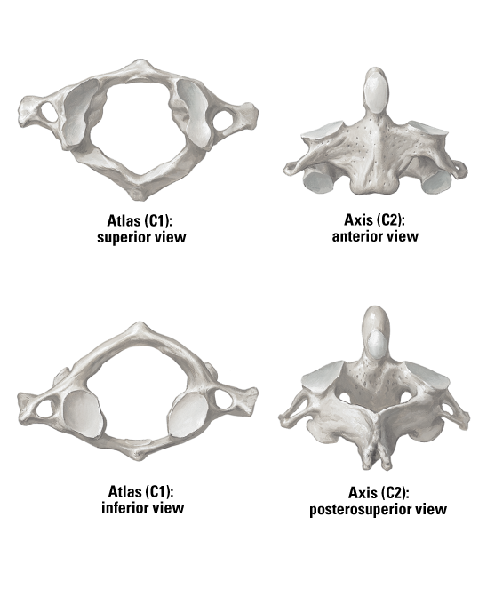

Facet for dens
Anterior tubercle
Anterior arch
Transverse process
Superior articular surface of atlas
Groove for vertebral artery
Posterior arch
Transverse foramen
Anterior arch
Inferior articular surface of atlas
Spinous process
Superior articular facet
Dens of axis
Body of axis
Superior articular facet for atlas
Pedicle of vertebral arch
1
2
3
4
5
6
7
8
9
10
11
12
13
14
15
16